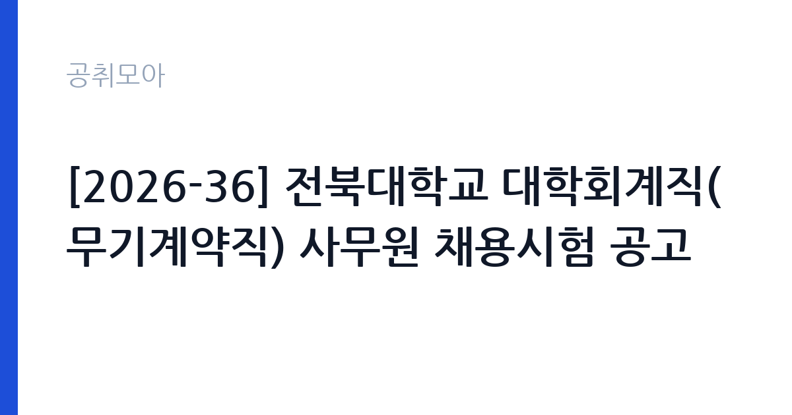

[국가기관] [2026-36] 전북대학교 대학회계직(무기계약직) 사무원 채용시험 공고
전북대학교 · 전북 · 마감 2026-11-11 (D-12) · 출처 나라일터

한눈에 보는 모집 조건
| 기관 | 전북대학교 |
|---|---|
| 공고명 | [2026-36] 전북대학교 대학회계직(무기계약직) 사무원 채용시험 공고 |
| 고용형태 | 공무직 |
| 근무지 | 전북 |
| 게시일 | 2026-10-30 |
| 마감일 | 2026-11-11 (D-12) |
지원자격, 이렇게 읽으세요
- 대학회계직(무기계약직) 사무원 1명
- 접수 ~2026-11-11 마감
- 세부 조건은 원문 공고문 확인
공무직 근로자는 공무원이 아니라 근로기준법이 적용되는 근로자이지만 기간의 정함이 없는 무기계약으로 채용되는 경우가 많아 정년까지 근무가 가능합니다. 채용은 공무원 시험과 달리 기관의 자체 전형으로 진행되고 인사 규정과 임금표를 적용받습니다. 이번 공고는 전북대학교가 직접 진행하는 자체 전형입니다. 이 공고는 대학회계직 무기계약직 사무원 1명을 뽑는 채용시험입니다. 원서접수는 2026년 11월 9일부터 11일까지이고 방문 또는 우편 제출만 받습니다. 응시자격과 우대 사항, 제출서류는 붙임 채용 공고문에 정리되어 있으므로 원문을 기준으로 준비해야 합니다. 문의는 전북대학교 사무국 총무과 인사팀에서 받습니다. 접수 기간이 짧고 방문·우편만 가능하므로 서류 발급 일정을 앞당겨 잡으십시오. 응시 자격 판단이 애매하면 접수 전에 채용 담당 부서로 문의하는 편이 안전합니다. 자격증은 유효 기간과 등록 상태를 확인해야 합니다. 갱신이 필요한 자격이라면 갱신 여부를 먼저 점검하십시오. 응시 자격 판단이 애매하다면 접수 전에 채용 담당 부서로 문의하는 편이 안전합니다. 서류 제출 후에는 소명 기회가 없습니다.
이 공고의 포인트
이 건은 전북대학교가 같은 시기에 낸 2개 모집분야 가운데 대학 사무행정(대학회계직) 직무입니다. 다른 직무 공고와 요건이 다르므로 지원 전에 모집분야 표를 대조해야 합니다. 이 공고의 첫 번째 포인트는 고용 형태입니다. 무기계약으로 채용되면 정년까지 근무가 가능해 재계약 부담이 없습니다. 반대로 기간제로 채용되는 공고라면 계약 기간을 먼저 확인해야 합니다. 두 번째는 업무 범위가 명확하다는 점입니다. 대학 사무행정(대학회계직) 직무로 채용되므로 배치 이후 담당 업무가 크게 흔들리지 않습니다. 세 번째는 근무지입니다. 전북 지역 근무로 수도권 공고에 비해 지원자 분포가 넓지 않아 상대적으로 경쟁이 분산되는 경우가 있습니다. 처우와 근무 형태가 표로 정리되어 있어 비교해 보기에 편한 공고입니다. 같은 직무 공고 중에서는 접수 마감이 가장 빨라 일정을 앞당겨 잡아야 합니다. 다만 선발 인원이 1명으로 많지 않아 자격을 갖춘 지원자가 몰리면 경쟁률이 높아질 수 있습니다.
전형은 어떻게 진행되나
서류전형과 면접전형 외에 직무수행능력 평가가 붙는 경우가 있습니다. 평가 방식은 공고문에 구체적으로 적혀 있으므로 어떤 항목에 배점이 높은지 먼저 파악하십시오. 면접에서는 지원 동기보다 실제 업무 경험에 대한 질문이 많고, 답변의 구체성이 평가를 가릅니다. 전형 일정은 서류 마감 이후 빠르게 진행되므로 연락 가능한 번호를 정확히 기재하고 문자와 메일을 수시로 확인해야 합니다. 최종 단계에서는 결격사유 조회와 신체검사가 진행됩니다. 면접조 편성과 대기 시간이 공지되므로 당일 도착 시간을 여유 있게 잡으십시오.
원문에서 확인한 전형 방식
전북대학교 직원 채용시험을 다음과 같이 공고하니, 유능한 인재의 많은 응시를 바랍니다. 1. 채용 직급 및 인원 - 대학회계직(무기계약직) 사무원 1명 ※ 정읍 첨단과학캠퍼스 근무 예정 2. 원서접수기간: 2026. 11. 9.(월) ~ 11. 11.(수) 3. 원서제출방법: 방문제출 혹은 우편제출 4. 문의처: 전북대학교 사무국 총무과 인사팀(063-270-2164) ※ 기타 자세한 사항은 붙임의 채용 공고를 참고하여 주시기 바랍니다. 2026. 10. 30. 전북대학교총장
이런 분께 추천해요
- 사무·행정 실무 경력이 있는 분
- 방문 또는 우편으로 서류를 기한 내 제출할 수 있는 분
- 무기계약직으로 장기 근무할 의사가 있는 분
지원 전 체크리스트
- 응시자격 요건과 경력 기준을 충족하는가 — 경력은 증명서로 입증해야 합니다
- 무기계약 여부와 정년 기준을 공고문에서 확인했는가
- 제출서류 목록을 모두 준비했는가 — 누락 시 서류 단계에서 탈락합니다
- 접수 마감 2026-11-11 이전에 접수 방식을 확인해 제출했는가
모집 일정과 제출 타이밍
2026-10-30에 공고가 올라왔고 접수는 2026-11-11까지입니다. 남은 기간은 12일이며, 이 기간에 자격증 사본과 경력증명서, 주민등록등본 같은 기본 서류를 모두 준비해야 합니다. 경력증명서는 발급에 며칠이 걸리는 경우가 있으니 가장 먼저 신청하십시오. 접수는 온라인과 우편·방문으로 나뉘는 경우가 많고, 우편 접수는 도착 기준으로 판정되므로 마감일 소인만 믿으면 안 됩니다. 면접 일정은 서류 발표 후 개별 통보되므로 제출 후에도 연락을 받을 수 있도록 유지해야 합니다. 서류 발표일과 면접일 사이가 짧은 경우가 많아 면접 준비는 접수와 동시에 시작하는 편이 좋습니다.
직무 이해하기: 국가기관
국립대학은 학사·연구·학생 지원과 함께 자체 사업을 운영하며, 행정 조직은 총장 직속 본부와 사무국, 부속기관으로 나뉩니다. 사무국은 인사·예산·시설·계약·정보화 부서를 총괄하고, 대학회계직과 계약직은 부서별 실무를 맡습니다. 학기 초와 방학에 업무량 차이가 크고, 국책 사업의 예산 집행과 성과 관리가 행정의 큰 부분을 차지합니다. 국립대학 대학회계직 사무원은 학과·부속기관·행정부서에 배치되어 사무 실무를 맡습니다. 문서 작성과 접수·발송, 예산 집행 보조, 물품 구매와 관리, 회의 운영 지원이 기본 업무입니다. 학사 일정에 맞춰 수강·성적·증명서 관련 업무가 몰리는 시기가 있고, 방학에는 정산과 자료 정리가 늘어납니다. 부서에 따라 학생 상담 창구나 시설 운영 지원을 맡기도 합니다. 무기계약직 신분이라 정년까지 근무가 가능하고 매년 임금이 조정됩니다. 이 직무는 담당 구역이 정해져 있어 근무지에 따라 실제 업무 환경이 달라집니다. 현장 업무와 사무 업무의 비중은 기관의 사업 일정에 따라 계절별로 달라집니다. 이 건의 근무 대상 지역·부서는 원문 기준 '무기계약직'입니다.
자기소개서 작성 팁
지원서는 사무 실무 경험을 업무 단위로 정리하는 것이 효과적입니다. 문서 작성·예산 보조·물품 관리처럼 실제로 맡았던 일을 기간과 함께 쓰십시오. 사용 가능한 사무 시스템과 엑셀 활용 수준을 구체적으로 제시하면 실무 연관성이 드러납니다. 대학에서 근무하려는 이유를 안정성만으로 쓰지 말고, 학사 지원 업무의 특성과 연결해 설명하십시오. 문항별 글자 수 제한을 먼저 확인하고, 각 문항의 첫 문장에 결론을 배치하는 방식이 읽기 쉽습니다. 지원 동기는 기관의 어떤 사업에 기여하겠다는 한 문장으로 시작하고, 이어서 본인의 경험을 근거로 붙이십시오. 감점을 피하려면 다른 기관에 보낼 수 있는 범용 문장을 그대로 쓰지 않는 것이 중요합니다. 기관 이름과 사업명이 문장 안에 자연스럽게 들어가야 준비도가 드러납니다.
면접 준비 포인트
면접에서는 사무 실무 경험과 문서 처리 능력을 확인합니다. 담당했던 업무 범위와 사용한 시스템, 동시에 여러 업무를 처리한 경험을 구체적으로 답하십시오. 대학 조직의 특성상 학사 일정과 부서 협조가 중요하므로 협업 사례를 준비하면 좋습니다. 무기계약직으로 장기 근무하겠다는 의사를 분명히 밝히십시오. 직무 특성상 체력이나 근무 시간에 대한 질문이 나올 수 있으므로 솔직하게 답하고 관리 계획을 함께 제시하십시오. 모르는 질문에 추측으로 답하면 감점 요인이 되므로, 확인 후 답하겠다고 밝히는 편이 안전합니다.
급여·근무조건 읽는 법
전북대학교의 구체적인 보수 수치는 이 공고 원문의 처우 항목과 보수표에서 확인해야 합니다. 공시 자료로 확인되지 않은 금액은 이 글에서 추정해 제시하지 않습니다. 알리오 2025년 결산 공시 기준 공공기관 전체 일반정규직 1인당 평균보수는 7,376만 9천원, 신입사원 평균초임은 4,031만 6천원입니다(무기계약직 미포함). 전기·설비 직무의 보수는 기관 임금표의 기본급에 자격 수당과 위험·특수 근무 수당이 더해지는 구조입니다. 자격 등급과 경력 연수에 따라 호봉이 달라지므로 경력 증빙이 급여 수준을 좌우합니다. 교대 근무가 포함되면 야간·휴일 근무수당이 붙어 실수령액이 기본급보다 높아지는 경우가 많습니다. 구체적인 금액은 공고문 처우표에서 확인하십시오. 2026년 적용 최저임금은 시급 10,320원, 월 환산 2,156,880원(주 40시간·209시간 기준)입니다. 고용노동부 고시 제2025-47호로 확정된 금액입니다. 공고문에 금액이 제시되지 않은 항목은 원문 보수표나 처우 설명에서 확인해야 하며 확인되지 않은 수치는 쓰지 않는 것이 원칙입니다. 비교할 때는 월 급여뿐 아니라 상여·명절휴가비·복지포인트·초과근무수당까지 포함한 연간 총액으로 계산하십시오. 기간제라면 계약 기간 동안의 총액을, 무기계약이라면 호봉 상승과 정년까지의 누적 소득을 기준으로 판단하는 편이 정확합니다.
자주 묻는 질문
- 선발 인원은 몇 명인가요?
공고문 기준 1명입니다. 직종별로 인원이 나뉘는 경우가 있으니 모집분야 항목을 함께 확인하십시오. - 근무지는 어디인가요?
전북 지역의 전북대학교 소속 근무지입니다. 세부 주소와 출퇴근 조건은 원문 공고문에서 확인할 수 있습니다. - 보수는 얼마인가요?
채용 신분(공무직)과 기관 임금 규정에 따라 정해지며 구체적인 금액은 공고문 처우 항목에 제시됩니다. 금액이 공개되지 않은 경우에는 원문의 보수표를 확인하십시오.
함께 보면 좋은 공고
[국가기관] 테스트 — 마감 2026-11-11[국가기관] 국무조정실·국무총리비서실 전문임기제공무원 채용 변경공고 — 마감 2026-11-09[국가기관] 육군 전투지위훈련단 BCTP 예비역 장성관찰관(군단 ·사단선임, 군단작전지속지원) 채용 공고 — 마감 2026-11-09출처: 나라일터 공개정보를 바탕으로 공취모아가 정리한 안내글입니다. 모집 조건·일정은 변경될 수 있으니 지원 전 반드시 원문 공고문을 확인하세요. 본 글은 정보 제공용이며 합격을 보장하지 않습니다.